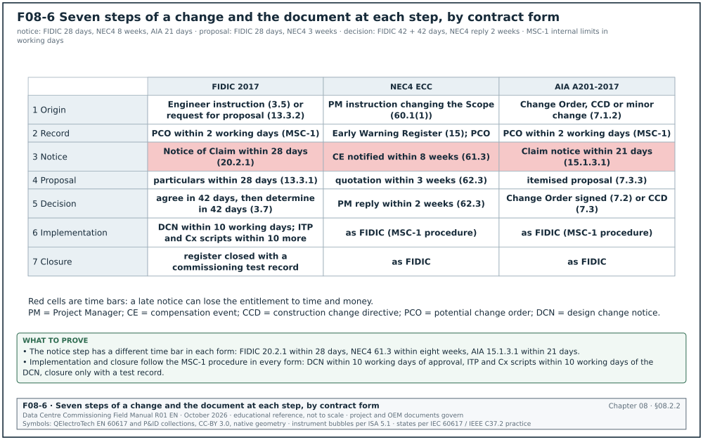
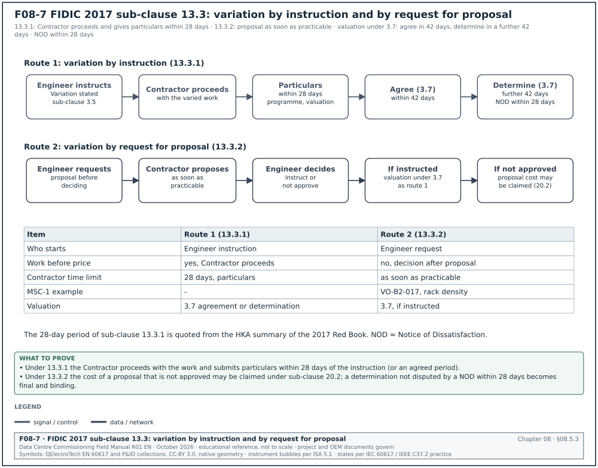
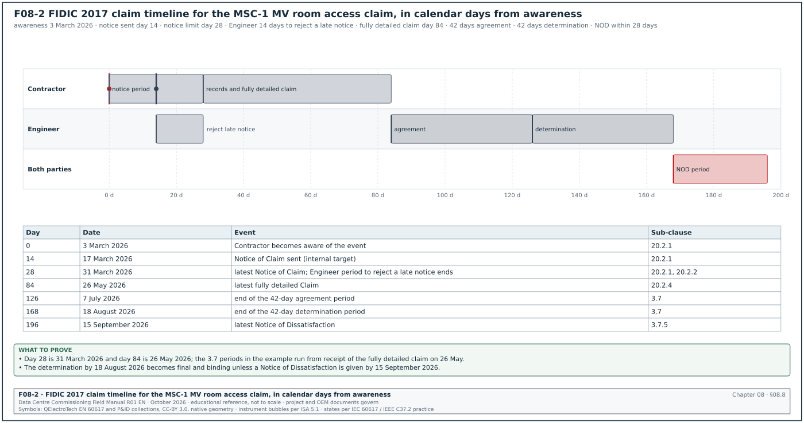
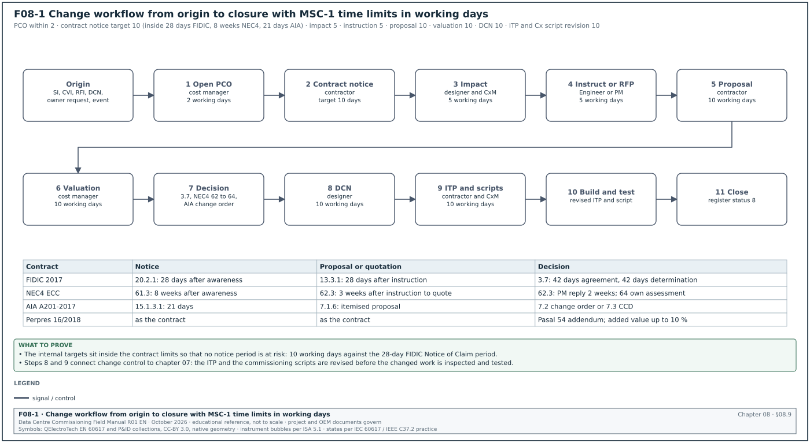
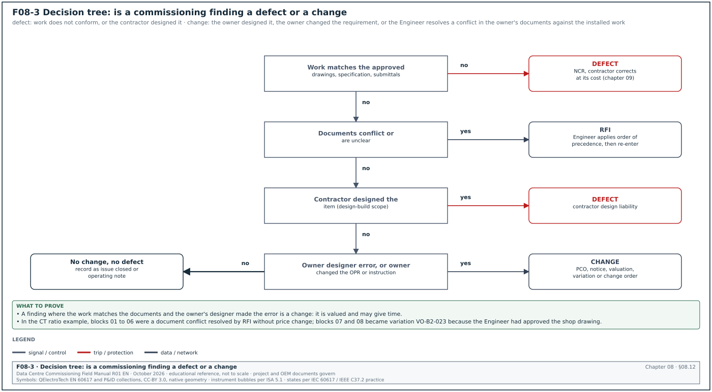
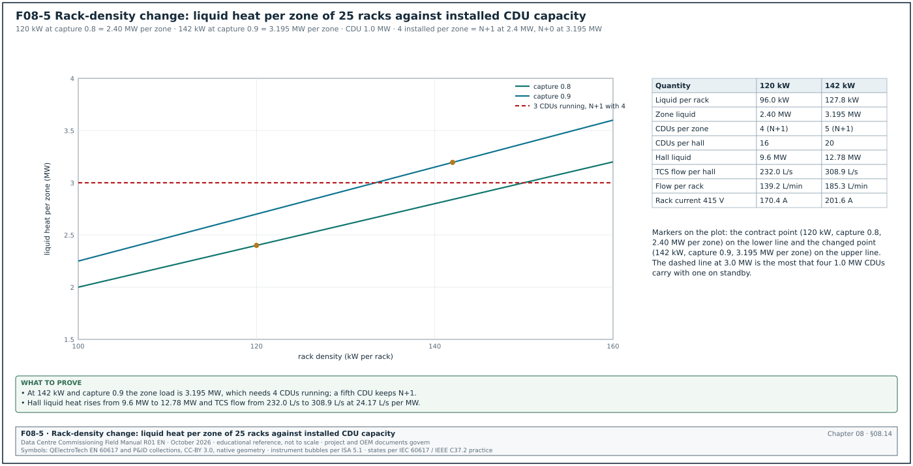
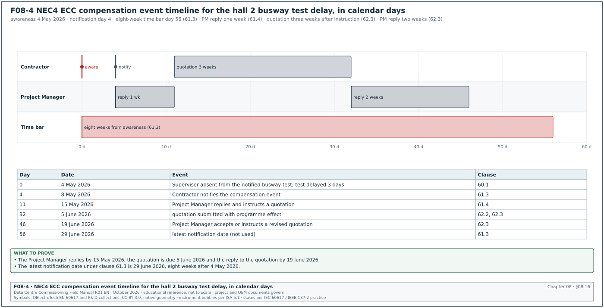

08.0Scope of this chapter
This chapter explains how a change to the agreed work is raised, notified, priced, approved, recorded and closed on a data-centre construction project. It also explains how a claim for time or money is notified and decided. Chapter 07 covers inspection and test plans (ITP). Chapter 09 covers defects, which are not changes; section 08.12 gives the test that separates the two.
- Baseline and change. The contract documents, the owner's project requirements (OPR), the basis of design (BoD) and the approved programme, and what counts as a change to them.
- Change documents. Site instruction (SI), confirmation of verbal instruction (CVI), request for information (RFI), design change notice (DCN), potential change order (PCO), variation order (VO), change order (CO), construction change directive (CCD) and minor change. The list also covers early warning (EW), compensation event (CE), extension of time (EOT) and claim, with definitions and owners.
- Contract procedures. FIDIC 2017 sub-clauses 3.5, 3.7, 13 and 20; NEC4 Engineering and Construction Contract (ECC) clauses 14, 15, 16 and 60 to 65; AIA A201-2017 Article 7 and section 15.1; Perpres 16/2018 Pasal 54 as amended.
- Notice time limits. The 28-day and 84-day FIDIC claim periods, the 42-day Engineer periods, the NEC4 eight-week time bar, the AIA 21-day claim notice, with a timeline figure.
- Change log and valuation. The change register fields, status codes, valuation methods and time impact analysis.
- Commissioning findings that become changes. The decision tree "defect or change", design change notices, and the effect of a change on ITPs, test scripts and the commissioning schedule.
- Worked examples. A change caused by a rack-density increase from 120 kW to 142 kW per rack, a change caused by a current transformer (CT) ratio error, a FIDIC claim timeline and an NEC4 compensation event timeline.
Documents and standards used: FIDIC Conditions of Contract for Construction (Red Book) and for Plant and Design-Build (Yellow Book), second edition 2017; NEC4 ECC (2017, with amendments); AIA A201-2017 General Conditions of the Contract for Construction. The chapter also uses Peraturan Presiden (Perpres) 16/2018 on government procurement of goods and services, as amended by Perpres 12/2021 and Perpres 46/2025. It also uses ASHRAE Guideline 0-2019 and ASHRAE Standard 202-2024 (commissioning process, OPR and issues log), ISO 9001:2015 clause 8.5.6 (control of changes) and the MSC-1 case ledger.
08.1What change control is and why a project needs it
08.1.1The baseline
Every construction contract defines what the contractor must build, by when and for what price. This definition is the baseline. On a data-centre project it consists of the documents below.
| Baseline item | What it fixes | Typical document on MSC-1 |
|---|---|---|
| Contract agreement and conditions | price, completion dates, risk allocation, change and claim procedures | contract agreement, general and particular conditions |
| Specification and drawings (or Employer's Requirements in a design-build contract) | quantity and quality of the work | specification sections, issued-for-construction drawings |
| Owner's project requirements (OPR) | what the facility must do: information technology (IT) load per hall, rack density, redundancy, temperatures, availability | OPR rev 3, approved by the owner |
| Basis of design (BoD) | how the design meets the OPR: equipment sizes, configurations, set points | BoD rev 4, by the designer |
| Accepted programme | dates and sequence, including commissioning levels L1 to L5 | baseline programme rev 0 in Primavera P6 |
| Approved submittals and ITPs | the products and the inspection points | submittal register, ITP register |
A change is any instruction, event or decision after contract signature that alters one of these items. ISO 9001:2015 clause 8.5.6 requires an organisation to "review and control changes for production or service provision" and to retain documented information describing "the results of the review of changes, the person(s) authorizing the change, and any necessary actions". Change control is the process that meets this requirement.
08.1.2Why the process exists
- Authority. Only named people may change the work. A request from an owner's IT planner, sent by e-mail to a site foreman, does not bind the contract. The process routes every request to the person with authority.
- Price and time. A change can cost money and time. The process records the agreed adjustment before or during the work, so the final account does not become a dispute.
- Technical control. A change to one system affects others. A higher rack load changes the cooling flow, the power feed, the protection settings, the commissioning scripts and the operating procedures. The process forces a review of every affected document.
- Records. The as-built documents, the turnover package and the commissioning record must describe the facility as built. Every change must reach those documents.
- Notice rights. Most contracts lose a party's right to more time or money if it does not give notice within a fixed period. The process makes sure each notice is given on time.
08.1.3Who has authority to change the work
| Contract | Who may instruct a change | Who agrees or determines price and time |
|---|---|---|
| FIDIC 2017 Red or Yellow Book | the Engineer, by an instruction (sub-clause 3.5) that states it is a Variation, or under sub-clause 13 | the Engineer, by agreement or determination under sub-clause 3.7 |
| NEC4 ECC | the Project Manager, by an instruction changing the Scope (a compensation event under clause 60.1(1)) | the Contractor quotes, the Project Manager accepts or assesses (clauses 62 to 64) |
| AIA A201-2017 | the Owner and the Architect jointly (Change Order with the Contractor, or Construction Change Directive); the Architect alone for a minor change | Owner, Contractor and Architect by Change Order; Architect determines under a CCD if no agreement |
| Indonesian government contract (Perpres 16/2018) | the commitment-making official, Pejabat Pembuat Komitmen (PPK), with the provider | PPK and provider, by a contract addendum |
| Bespoke hyperscale owner contract | the owner's named representative in the contract | as the contract states, usually the construction manager (CM) with the cost manager |
Check: Before acting on any instruction, read the contract clause that names the person with authority. On hyperscale projects the usual practice is that the commissioning manager (CxM) has no authority to instruct a change. A CxM finding that needs a change goes to the CM as a request, through the route in section 08.12.
08.2Change documents and their definitions
08.2.1Definitions
| Term | Abbreviation | Definition used in this manual | Who issues it |
|---|---|---|---|
| Site instruction | SI | a written instruction on site from the Engineer or the CM to the contractor; it may or may not change the work | Engineer, Project Manager, Architect |
| Confirmation of verbal instruction | CVI | the contractor's written record of an instruction given verbally, sent for confirmation | contractor |
| Request for information | RFI | a question from the contractor to the designer about the documents; the answer may reveal a change | contractor asks, designer answers |
| Design change notice | DCN | the designer's notice that a drawing or specification is revised, with the reason and the affected documents | designer |
| Potential change order | PCO | an internal record that a change may exist, opened to track it before it is priced or agreed | owner's cost manager or contractor |
| Variation | VO | FIDIC term: a change to the Works instructed or approved as a Variation under sub-clause 13 | Engineer |
| Change order | CO | AIA term, also common in bespoke contracts: a signed agreement on the change, the price adjustment and the time adjustment | Owner, Contractor and Architect |
| Construction change directive | CCD | AIA term: a written order by Owner and Architect directing a change before agreement on price or time | Owner and Architect |
| Minor change | none | AIA term: a change consistent with the intent of the documents with no price or time adjustment, ordered by the Architect alone | Architect |
| Early warning | EW | NEC4 term: a notice by the Contractor or the Project Manager of a matter that could increase the price, delay completion or impair performance | either party |
| Compensation event | CE | NEC4 term: an event listed in clause 60.1 (or added in the Contract Data) that entitles the Contractor to a change in price, completion date or key dates | either party notifies |
| Extension of time | EOT | an extension of the time for completion granted for a cause that the contract allows | Engineer, Project Manager or Architect |
| Claim | none | FIDIC 2017 definition: a request or assertion by one party to the other for an entitlement or relief under the contract | either party |
| Deviation or concession request | none | a contractor request to supply or accept work that departs from the specification; if accepted it is recorded as a change, usually without price increase (chapter 09) | contractor |
| Contract addendum | adendum | Indonesian term for the signed amendment to a contract under Perpres 16/2018 Pasal 54 | PPK and provider |
08.2.2How the documents connect
The documents form a sequence. An instruction or an event starts the sequence; a signed change order or determination ends it. Figure F08-6 maps each of the seven steps below to the document and the time limit under FIDIC 2017, NEC4 ECC and AIA A201-2017.


- Origin. An SI, a CVI, an RFI answer, a DCN, an owner request or an event (for example late access) creates a possible change.
- Record. The cost manager opens a PCO (or the NEC4 Project Manager records an early warning) with a number and a short description.
- Notice. The contractor gives the notice that the contract requires (FIDIC sub-clause 20.2 Notice of Claim, NEC4 clause 61.3 notification, AIA section 15.1.3 claim notice) when it believes it is entitled to time or money.
- Proposal or quotation. The contractor prices the change and its time effect.
- Decision. The Engineer agrees or determines (FIDIC), the Project Manager accepts or assesses (NEC4), or the parties sign a change order (AIA).
- Implementation. The designer issues revised documents, the contractor builds, the ITP and the commissioning scripts are revised.
- Closure. The change register shows the agreed value and time, the as-built documents include the change, and the commissioning record shows the changed system was tested.
Figure F08-1 shows the full change workflow with roles and time limits.
08.2.3Common errors with change documents
- Instruction without authority. A designer's site representative tells the contractor to move a coolant distribution unit (CDU). The designer has no authority to instruct under the contract. The contractor must ask the Engineer for a written instruction before acting.
- RFI answer that changes scope with no change record. The designer answers an RFI with "provide an additional isolation valve at each CDU". This is a change to the drawings. The contractor must notify the change; the cost manager opens a PCO.
- CVI not sent. A verbal instruction at a meeting is acted on without a CVI. Months later the parties do not agree what was said. Send the CVI within 2 working days.
08.3Roles and responsibilities in change control
08.3.1RACI for a change
The responsible, accountable, consulted, informed (RACI) table uses R (responsible, does the work), A (accountable, decides), C (consulted) and I (informed).
| Activity | CM | Engineer or Project Manager | Designer, engineer of record (EOR) | Contractor | Cost manager or quantity surveyor | CxM |
|---|---|---|---|---|---|---|
| Raise owner request for change | A | R | C | I | C | C |
| Issue instruction | C | A, R | C | I | I | I |
| Technical impact assessment | I | A | R | C | I | C |
| Price and programme proposal | I | C | I | A, R | C | I |
| Valuation review | C | A | I | C | R | I |
| Approval of change | A | R | I | C | C | I |
| Revise drawings and specification | I | A | R | I | I | C |
| Revise ITP and Cx scripts | I | A | C | R (ITP) | I | R (Cx scripts) |
| Test the changed system | I | C | C | R | I | A |
| Close change record | I | A | C | C | R | C |
08.3.2What the CxM does in change control
- Reviews every change for commissioning impact. The CxM checks whether the change alters a commissioning level, a test script, a test date, a load bank requirement, a sequence of operation or an acceptance value.
- Records the impact. The CxM writes the commissioning impact on the change impact form: affected systems, scripts, tests to repeat, added test days, extra load bank capacity.
- Raises requests from commissioning findings. When a test shows that the design does not meet the OPR, the CxM records the finding in the issues log. The CxM sends it to the CM as a recommendation for a change (section 08.12).
- Verifies implementation. The CxM confirms that the changed system was retested and that the commissioning record refers to the change number.
08.4Site instructions and confirmations of verbal instructions
08.4.1Site instruction fields
| Field | Type | Example value |
|---|---|---|
| SI number | text | SI-B2-0118 |
| Date and time | date, time | 12 June 2026, 14:30 |
| Issued by (name, role, authority clause) | text | Engineer's representative, mechanical, delegated under sub-clause 3.4 |
| Addressed to | text | general contractor (GC) project manager |
| Instruction | text | relocate the temporary load bank connection point for hall 3 from panel B2-DH3-LB-01 to panel B2-DH3-LB-02 |
| Reason | text | access conflict with fit-out works in grid D7 |
| Documents affected | list | B2-E-LB-201 rev B |
| States it is a variation | yes or no | no |
| Contractor's response due | date | 16 June 2026 |
| Contractor acknowledgement | name, date | received 12 June 2026, 15:10 |
| Linked PCO, non-conformance report (NCR) or RFI | text | PCO-B2-0062 opened by contractor |
08.4.2Procedure for a site instruction
Purpose: Give and record a written instruction with a clear statement of whether it changes the work.
Trigger: The Engineer or the CM decides that the contractor must do something not in its current plan.
Owner: The person with authority to instruct under the contract.
Steps:
- Write the instruction. Use the SI form. State the work, the location, the documents affected and the reason.
- State whether it is a variation. Tick "yes" if the instruction changes the work. Under FIDIC 2017, the Engineer may not state that an instruction is a Variation while the Contractor considers it is one. The Contractor then gives notice to the Engineer before starting, with its reasons.
- Send through document control. The SI is valid from the time stamp of the document control system.
- Contractor acknowledges. The contractor acknowledges within 1 working day.
- Contractor responds. Within the period on the form (MSC-1 practice: 3 working days) the contractor states whether it considers the SI a change and, if so, opens a PCO and gives the notice the contract requires.
- Execute. Unless the contract allows the contractor to refuse (for example FIDIC 2017 sub-clause 13.1 cases), the contractor does the instructed work.
Records: Signed SI, acknowledgement, contractor response, PCO number.
08.4.3Procedure for a CVI
- Write the CVI. The contractor writes the verbal instruction word for word as understood, the name of the person who gave it, the date, time and place.
- Send within 2 working days. Send the CVI to the person who gave the instruction, copied to the Engineer or Project Manager.
- Request confirmation. Ask for written confirmation or correction. The contract may deem a CVI confirmed if it is not contested within a stated period; read the contract. FIDIC 2017 requires every instruction to be in writing (sub-clause 3.5 with sub-clause 1.3), so on a FIDIC 2017 project a CVI is a request for a written instruction.
- Hold work if safe to do so. For work that changes the price or the design, wait for written confirmation unless the delay creates a safety risk.
08.5Variations under FIDIC 2017
08.5.1Sub-clause 13.1, right to vary
The Engineer may initiate a Variation at any time before the Taking-Over Certificate for the Works is issued. A Variation may be initiated by an instruction or by a request for the Contractor to submit a proposal. Under the 2017 edition the Contractor is bound by a Variation unless it promptly gives notice, with supporting particulars, that one of the listed exceptions applies. The exceptions are listed below (the three exceptions of the 2017 Red Book Sub-Clause 13.1, as listed in the ADB FIDIC 2017 Red Book variations workshop slides; confirm the further design-related exceptions against Sub-Clause 13.1 of the Yellow Book).
- Unforeseeable work. The varied work was Unforeseeable, having regard to the scope and nature of the Works.
- Goods not available. The Contractor cannot readily obtain the Goods required for the Variation.
- Safety or environment. The Variation will adversely affect the Contractor's ability to comply with its health and safety obligations (sub-clause 4.8) or its environmental obligations (sub-clause 4.18).
08.5.2Sub-clause 13.2, value engineering
The Contractor may submit a proposal that would accelerate completion, reduce cost, improve efficiency or value, or otherwise benefit the Employer. If the Engineer approves it, the Engineer instructs a Variation. The Particular Conditions may set how a saving is shared.
Example: The contractor proposes prefabricated pipe skids for the CDU connections in halls 4 to 12. The skids reduce site welding by 1,800 joints and the hydrostatic test days per hall from 6 to 3. The Engineer approves the proposal after the designer confirms the skid design. The CxM confirms that the factory pressure test of each skid can replace part of the site test, provided the site joints between skids are tested on site.
08.5.3Sub-clause 13.3, variation procedure
Figure F08-7 shows the two routes of sub-clause 13.3, by instruction and by request for proposal, with the time limit at each step.


- Variation by instruction (13.3.1). The Engineer instructs the Variation, and the Contractor proceeds with the work. Within 28 days of receiving the instruction (or another period proposed by the Contractor and agreed by the Engineer), the Contractor submits detailed particulars. The particulars are a description of the work performed or to be performed, a programme, a proposal for any change to the programme and the Time for Completion, and a proposal for the valuation. The 28-day period is the 2017 Red Book Sub-Clause 13.3.1 period as quoted in the HKA comparison of the 1999 and 2017 forms (March 2018); the Particular Conditions of the signed contract may change it.
- Variation by request for proposal (13.3.2). The Engineer requests a proposal before deciding. The Contractor responds as soon as practicable, or gives reasons why it cannot comply. The response contains a description of the proposed work and programme, the proposed effect on the Time for Completion and the programme, and a proposal for valuation. The Engineer then instructs the Variation or notifies that it is not approved. The Contractor's cost of preparing a proposal that is not approved may be claimed under sub-clause 20.2.
- Valuation. The Engineer proceeds under sub-clause 3.7 to agree or determine the adjustment to the Contract Price and the Time for Completion. The valuation uses the rates and prices in the Contract where they apply, adjusted rates where the work is similar, and new rates where no rate applies.
08.5.4Sub-clause 3.5, Engineer's instructions, and sub-clause 3.7, agreement or determination
- Instruction in writing. Every instruction under FIDIC 2017 is given in writing under sub-clause 1.3.
- Instruction that is a variation but not stated as one. The Contractor may consider that an instruction constitutes a Variation, or involves work that is already part of a Variation, when the Engineer has not said so. The Contractor then gives a Notice to the Engineer with reasons before starting the work. The Engineer then confirms, reverses or varies the instruction (FIDIC 2017 Sub-Clause 3.5: the Notice is given immediately and before the work starts, and the Engineer responds within 7 days or the instruction is deemed revoked, as summarised by Fenwick Elliott).
- Agreement or determination. The Engineer first consults the Parties and tries to reach agreement within 42 days. If no agreement is reached in that time, the Engineer makes a fair determination within a further 42 days. A Party that is dissatisfied gives a Notice of Dissatisfaction (NOD) within 28 days after receiving the determination; otherwise the determination becomes final and binding.
08.6NEC4 early warnings and compensation events
08.6.1Early warning, clause 15
Clause 15 of NEC4 ECC replaced clause 16 of NEC3. Both the Contractor and the Project Manager must give an early warning as soon as either becomes aware of a matter that could affect the work. The matters are an increase in the total of the Prices, a delay to Completion, a delay to a Key Date, or impaired performance of the works in use. The early warning is a risk-management tool; it is separate from the notice of a compensation event.
- Early Warning Register. The Project Manager prepares the first Early Warning Register and issues it within one week of the starting date.
- First early warning meeting. The Project Manager instructs the Contractor to attend the first early warning meeting within two weeks of the starting date.
- Further meetings. Meetings are held at intervals no longer than the "early warning interval" stated in the Contract Data, and at any time either party instructs or requests one.
- Register revision. The Project Manager revises the Early Warning Register and issues it within one week after each meeting, recording the decisions made and the actions with owners.
- Consequence of not warning. An experienced contractor could have given an early warning that the Contractor did not give. The compensation event is then assessed as if the warning had been given (NEC4 ECC clause 63.7, as listed in Civil Engineering Contractors Association (CECA) NEC4 Bulletin 52, April 2025).
Example: In the MSC-1 worked example the Contractor gives early warning EW-B2-041 on 2 April 2026. The 20 kV cable supplier has advised a 5-week delay on the second batch of 630 mm² cable. At the meeting on 7 April the parties record three actions. The supplier confirms the date in writing by 9 April. The Contractor resequences the pulls so that the feeders for halls 1 and 2 use the first batch. The CxM moves the hall 3 MV cable tests by 4 weeks in the commissioning schedule. No compensation event arises because cable supply is the Contractor's risk under the contract.
08.6.2Compensation events, clauses 60 to 65
| Clause | Subject | Time limit or rule |
|---|---|---|
| 60.1 | list of compensation events | 21 events in NEC4 ECC, for example a Project Manager instruction changing the Scope (60.1(1)), the Client not giving access by the access date (60.1(2)), a test or inspection done by the Supervisor that causes unnecessary delay |
| 61.1 | Project Manager notifies compensation events arising from its own or the Supervisor's actions | at the time of the instruction |
| 61.3 | Contractor notifies other compensation events | within eight weeks of becoming aware that the event has happened; a later notification loses the entitlement for events the Project Manager was not required to notify |
| 61.4 | Project Manager replies to a Contractor notification | within one week, or a longer period agreed; failure can lead to deemed acceptance after the Contractor's further notice |
| 62.2, 62.3 | Contractor submits quotation | within three weeks of the Project Manager's instruction to quote |
| 62.3 | Project Manager replies to a quotation | accept, instruct a revised quotation with reasons, or state that it will make its own assessment; the reply period is two weeks (NEC4 ECC clause 62.3, as described in CECA NEC4 Bulletin No. 59, November 2025) |
| 62.5 | extending the periods | by agreement before the period ends |
| 62.6 | Project Manager does not reply | the Contractor notifies the failure; continued failure leads to deemed acceptance |
| 63 | assessment | effect on Defined Cost plus the Fee; effect on Completion using the Accepted Programme |
| 64.1 | Project Manager's own assessment | when the Contractor has not quoted in time, has not assessed correctly, or has no accepted programme |
| 65 | implementing | the compensation event is implemented when the quotation is accepted or the Project Manager's assessment is notified |
08.6.3NEC4 clauses 14 and 16
- Clause 14, the Project Manager and the Supervisor. Clause 14.1 states that the Project Manager's acceptance of a communication or of the Contractor's work does not change the Contractor's responsibility to provide the works or its liability for its design. A design accepted by the Project Manager that later fails a commissioning test remains the Contractor's design liability in an Option with Contractor design.
- Clause 16, Contractor's proposals. The Contractor may propose a change to the Scope provided by the Client that would reduce the amount the Client pays. The Project Manager accepts, rejects or asks for a quotation. This is the NEC4 equivalent of value engineering.
08.7Changes under AIA A201-2017
08.7.1Three instruments
AIA A201-2017 section 7.1.2 sets three ways to change the work.
- Change Order (section 7.2). A written instrument prepared by the Architect and signed by the Owner, Contractor and Architect. It states their agreement on the change in the work, the amount of any adjustment in the Contract Sum, and the extent of any adjustment in the Contract Time.
- Construction Change Directive (section 7.3). A written order prepared by the Architect and signed by the Owner and Architect, directing a change "prior to agreement on adjustment, if any, in the Contract Sum or Contract Time, or both". It is used in the absence of total agreement on a Change Order. The Contractor proceeds with the change.
- Minor change (section 7.4). A written order by the Architect alone for a minor change consistent with the intent of the Contract Documents with no adjustment in Contract Sum or Time. If the Contractor believes that the minor change affects the Contract Sum or Time, it notifies the Architect and does not proceed.
08.7.2Valuation of a CCD
Section 7.3.3 lists four methods for the price adjustment under a CCD.
- Lump sum. A lump sum, properly itemised.
- Unit prices. Unit prices stated in the Contract Documents or agreed later.
- Cost plus fee. Cost determined as agreed, plus a fixed or percentage fee.
- Architect's determination. Under section 7.3.4, the Architect determines the adjustment from the reasonable expenditures and savings, including overhead and profit as set out in the Agreement. Under section 7.3.4 the costs are limited to labour, materials and equipment, equipment rental, bonds, insurance, permits and taxes related to the change, and supervision and field office personnel directly attributable to the change.
Example: An owner-edited A201-2017 used by a United States university (see 08.21, item 8) adds section 7.1.4. The section allows 20 % overhead and profit on work by the Contractor's own forces and 10 % on work by subcontractors. This is an example of how the general conditions are modified; the percentages are not part of the standard AIA form.
08.7.3Claims notice
Section 15.1.3.1 of A201-2017 requires claims to be initiated by notice "within 21 days after occurrence of the event giving rise to such Claim or within 21 days after the claimant first recognizes the condition giving rise to the Claim, whichever is later".
08.8Claims and extensions of time


08.8.1FIDIC 2017 sub-clause 20 claim procedure
FIDIC 2017 sub-clause 20.1 classifies claims into three kinds. The first two are Employer claims for payment or extension of the Defects Notification Period and Contractor claims for payment or extension of time. The third is claims by either Party for any other entitlement or relief. Claims of the first two kinds follow sub-clause 20.2. Figure F08-2 shows the time limits on a timeline.
| Step | Sub-clause | Time limit | Consequence of missing it |
|---|---|---|---|
| Notice of Claim | 20.2.1 | as soon as practicable and no later than 28 days after the claiming Party became aware, or should have become aware, of the event | the other Party is discharged from liability for the event; the notice is a condition precedent |
| Engineer's notice that the Notice of Claim is late | 20.2.2 | within 14 days of receiving the Notice of Claim | if the Engineer gives no such notice, the Notice of Claim is deemed valid (the other Party may disagree) |
| Contemporary records | 20.2.3 | kept from the time of the event | weak or missing records reduce the assessable amount |
| Fully detailed Claim | 20.2.4 | within 84 days after awareness (or another period agreed with the Engineer) | if the statement of the contractual or legal basis is not submitted in that time, the Notice of Claim lapses |
| Agreement or determination | 20.2.5 with 3.7 | 42 days for agreement, then 42 days for determination | the Engineer's failure to determine is treated as a rejection under 3.7 |
| Claims with continuing effect | 20.2.6 | interim updates monthly; final claim within 28 days after the effects end | as 20.2.4 |
| Notice of Dissatisfaction | 3.7.5 | within 28 days after receiving the determination | the determination becomes final and binding |
The fully detailed Claim contains four items. The first is a detailed description of the event or circumstance. The second is a statement of the contractual and/or other legal basis of the Claim. The third is all contemporary records on which the claiming Party relies. The fourth is detailed supporting particulars of the amount claimed and the extension of time claimed.
08.8.2Extension of time
An extension of time moves the date for completion. The contractor is entitled to it only when a cause that the contract allows has delayed a critical activity on the accepted programme. Common causes on a data-centre project:
- Variation. A change that adds work on the critical path, for example additional CDUs in each hall.
- Late access or late information from the owner. For example late release of the hall 3 fit-out area by the owner's IT contractor.
- Owner-supplied equipment late. For example owner-procured switchgear or generators delivered after the contract date.
- Authority delay. For example a delayed grid connection by the utility, if the contract allocates that risk to the owner.
- Exceptional weather or force majeure, as the contract defines.
The claim must show the delay with a time impact analysis on the accepted programme (section 08.11.3).
08.8.3Notice letter fields
| Field | Type | Example value |
|---|---|---|
| Letter reference | text | GC-A/ENG/NOC/0019 |
| Contract clause | text | FIDIC 2017 sub-clause 20.2.1 |
| Date sent and method | date, text | 17 March 2026, document control system and e-mail as sub-clause 1.3 |
| Event | text | Employer's IT fit-out contractor occupied B2 MV room until 2 April 2026; MV switchboard installation planned from 3 March 2026 |
| Date of awareness | date | 3 March 2026 |
| Entitlement sought | text | extension of time and additional payment |
| Contemporary records being kept | list | daily site diaries, access log, photographs, programme updates, crane booking records |
| Programme activity affected | text | B2-ELE-MVSWBD-INST, critical path |
| Signature | name, role | GC project director |
08.9The change workflow from origin to closure


08.9.1Procedure
Figure F08-1 shows the workflow. The time limits below are those in the MSC-1 change management procedure, set inside the contract periods.
Purpose: Take every possible change from its origin to a signed decision and a closed record within the contract time limits.
Trigger: An SI, CVI, RFI answer, DCN, owner request, commissioning finding or event that may change the work, price or time.
Owner: Owner's cost manager for the register; Engineer or Project Manager for decisions.
Steps:
- Open a PCO. The cost manager opens a PCO within 2 working days of the origin and gives it a number. The PCO records the origin document, the description, the systems and the parties.
- Give notice. The contractor sends the contract notice (FIDIC 20.2.1, NEC4 61.3, AIA 15.1.3) within the contract period. On MSC-1 the procedure sets an internal target of 10 working days so that the contract limit is never at risk.
- Assess technical impact. The designer assesses the technical impact within 5 working days: drawings and specification sections to revise, equipment changes, interfaces. The CxM adds the commissioning impact in the same period.
- Instruct or request a proposal. The Engineer either instructs the change (with the statement that it is a Variation) or requests a proposal. The instruction or request is issued within 5 working days after the impact assessment.
- Submit the proposal. The contractor submits the price and time proposal with itemised costs and the time impact analysis. The contract sets the limit (FIDIC 13.3.1: 28 days after instruction; NEC4 62.3: three weeks after instruction to quote). MSC-1 target: 10 working days.
- Review the valuation. The cost manager reviews quantities, rates and the programme effect within 10 working days and recommends a value.
- Agree or determine. The Engineer agrees or determines under FIDIC 3.7; the Project Manager accepts or assesses under NEC4 62 to 64; the parties sign the change order under AIA 7.2.
- Issue revised documents. The designer issues revised drawings and specifications with a DCN within 10 working days of approval.
- Revise ITPs and Cx scripts. The contractor revises the affected ITPs and the CxM revises the affected commissioning scripts within 10 working days of the DCN.
- Build and test. The contractor builds the change. The changed system is inspected under the revised ITP and tested under the revised script.
- Close. The cost manager closes the change record when the decision is signed, the revised documents are issued and the commissioning test of the changed system is recorded.
Acceptance: Every change in the register has a contract notice within the contract period, a signed decision, revised documents, revised ITP and script where affected, and a test record.
Records: Change register, PCO form, notice letter, impact assessment, proposal, valuation report, determination or change order, DCN, revised ITP and script, test record.
08.9.2Change impact form, commissioning section
| Field | Type | Example value |
|---|---|---|
| Change number | text | VO-B2-017 |
| Systems affected (Cx system codes) | list | B2-DH3-TCS, B2-DH3-CDU-01 to -20, B2-DH3-RPP |
| Commissioning levels affected | list | L2, L3, L4, L5 |
| Scripts to revise | list | CX-L4-B2-DH3-CDU-01 rev 2, CX-L5-B2-DH3-IST-01 rev 1 |
| Tests to repeat | list | CDU L3 start-up for 4 added units; L4 CDU redundancy test for each zone |
| Added test days | number | 4 |
| Load bank or heat load change | text | liquid heat emulator capacity per hall from 9.6 MW to 12.78 MW |
| Effect on integrated systems test (IST) date | text | hall 3 IST moves by 6 working days unless test teams are added |
| Prepared by, date | text | CxM, 22 June 2026 |
08.10The change register
08.10.1Register fields
| Field | Type | Example value |
|---|---|---|
| Change number | text | VO-B2-017 |
| PCO number | text | PCO-B2-0071 |
| Title | text | rack density increase to 142 kW in B2 halls 1 to 3 |
| Origin | code | owner request (OPR revision) |
| Origin document | text | OPR rev 4, owner letter OWN/GC-A/0233 |
| Contract mechanism | code | FIDIC 13.3.2 request for proposal |
| Date of origin | date | 2 June 2026 |
| Contract notice date | date | 9 June 2026 |
| Status | code | see 08.10.2 |
| Contractor proposal value | money | USD 4,960,000 |
| Recommended value | money | USD 4,610,000 |
| Approved value | money | USD 4,700,000 |
| Time claimed and granted | working days | 15 claimed, 10 granted |
| Commissioning impact | text | 4 added test days per hall |
| DCN numbers | list | DCN-M-0142, DCN-E-0097 |
| ITP and script revisions | list | ITP-MEC-CDU-001 rev 3; CX-L4-B2-DH3-CDU-01 rev 2 |
| Closure date | date | open |
08.10.2Status codes
| Code | Status | Meaning |
|---|---|---|
| 0 | identified | PCO open, no notice yet |
| 1 | notified | contract notice given |
| 2 | under assessment | technical and commissioning impact being assessed |
| 3 | proposal requested | Engineer has requested a proposal or the Project Manager an instruction to quote |
| 4 | proposal received | price and time proposal received |
| 5 | under valuation | cost manager reviewing |
| 6 | agreed or determined | decision signed |
| 7 | implemented | documents issued, work built |
| 8 | tested and closed | commissioning record shows the changed system tested; record closed |
| 9 | withdrawn or rejected | not a change, or not approved; reason recorded |
08.11Valuation and time impact
08.11.1Valuation methods
| Method | When used | Contract basis | Data needed |
|---|---|---|---|
| Contract rates | the changed work is of similar character and done under similar conditions to work priced in the bill of quantities | FIDIC 2017 valuation under sub-clause 12.3, applied to Variations through 13.3.1 (HKA summary); bespoke contracts | quantities and the contract rate |
| Adjusted rates | similar work, but different conditions (for example night work in a live hall) | as above | contract rate and the justification for the adjustment |
| New rates (star rates) | no similar work in the contract | as above | cost build-up: labour, plant, material, overhead, profit |
| Dayworks | small or undefined work | dayworks schedule in the contract | signed daily timesheets and material receipts |
| Defined Cost plus Fee | NEC4 compensation events | clause 63 and the Schedule of Cost Components | forecast or actual Defined Cost; Fee percentage from the Contract Data |
| Lump sum, unit prices or cost plus fee | AIA change order or CCD | section 7.3.3 | itemised proposal under section 7.1 |
08.11.2Rules for checking a contractor's proposal
- Quantities. Re-measure from the revised drawings. Check that deleted work is credited.
- Rates. Use contract rates where they apply. A new rate needs a cost build-up with labour hours, crew size and plant.
- Overhead and profit. Apply the percentage that the contract allows once. Do not add overhead at each tier unless the contract allows it.
- Time-related costs. Allow time-related costs (site staff, cranes, temporary power) only for the extension of time that the Engineer granted.
- Commissioning costs. Include added test days, load bank hire, original equipment manufacturer (OEM) attendance and retest costs that the change causes.
- Credits. Deduct the cost of any equipment no longer needed (for example a smaller pump that is replaced by a larger one before delivery).
08.11.3Time impact analysis
Purpose: Show the effect of a change on the completion date and the commissioning dates.
Steps:
- Take the accepted programme. Use the accepted programme current at the date of the change (NEC4 calls this the Accepted Programme at the dividing date).
- Build a fragnet. Write the new or changed activities with durations and logic links, for example "procure additional CDUs, 16 weeks", "install CDUs hall 3, 8 working days", "L3 start-up added CDUs, 2 working days".
- Insert and schedule. The contractor's planner inserts the fragnet into the accepted programme in Primavera P6 and reschedules.
- Compare. Compare the completion date and the key dates (for example ready for service (RFS) of hall 3) before and after.
- Identify mitigation. List options that reduce the delay: parallel test teams, resequencing, early procurement.
- Report. The contractor reports the delay in working days, with the critical path before and after, in the time impact analysis attached to the proposal (08.9.1 step 5).
08.12How commissioning findings become changes: defect or change


08.12.1The decision
When a commissioning test or a design review finds that something does not work as required, the first question is whether the item is a defect or a change. A defect is work that does not conform to the contract documents; the contractor corrects it at its cost (chapter 09). A change is a departure from the contract documents that the owner instructs or that the contract allocates to the owner; it is valued and may give time. Figure F08-3 shows the decision tree; the steps below follow it.
- Compare with the contract documents. Check whether the installed work matches the approved drawings, specification and submittals. If it does not, the item is a defect: raise an NCR (chapter 09). The contractor corrects at its cost.
- Check the contractor's design responsibility. If the work matches the documents but the documents are wrong, check who designed it. In a design-build contract (FIDIC Yellow Book, NEC4 with Contractor design) a design error by the contractor is a defect. The contractor corrects at its cost.
- Check the owner's design or requirements. If the owner's designer made the error, or the owner's requirement in the contract does not meet the owner's need, the correction is a change. The owner instructs a variation and pays.
- Check for a change in the owner's requirements. If the owner now wants something different from the OPR in the contract (for example a higher rack density), the item is a change.
- Check for ambiguity. If the documents conflict or are unclear, raise an RFI. The Engineer decides which document governs using the order of precedence in the contract. The answer may make the item a defect or a change.
- Record the outcome. Write the decision in the commissioning issues log with the reference: NCR number or PCO number.
08.12.2Examples of the decision
| Finding | Documents say | Who designed | Result |
|---|---|---|---|
| CDU pump trips on high current at 100 % flow | pump selected by the CDU OEM to meet the specified flow | contractor (via OEM) | defect: NCR; OEM corrects |
| Chilled water flow to hall 3 is 12 % below design at full load | pipe sizes and pump duty as the owner's designer's drawings | owner's designer | change: the owner instructs a pump impeller change and pays |
| Busway joint torque below the OEM value | OEM installation manual torque value in the specification | not a design issue | defect: NCR (chapter 09) |
| Owner raises rack density from 120 kW to 142 kW | OPR in the contract states 120 kW | owner's requirement changed | change (08.14) |
| Meter schedule and specification give different CT ratios | conflict between documents | owner's designer | RFI; Engineer determines; see 08.15 |
| Building management system (BMS) graphic shows wrong units for a sensor | specification requires correct units | contractor (integrator) | defect: punch item |
08.12.3Common errors
- Defects priced as changes. The contractor submits a PCO for correcting work that does not match the drawings. The cost manager rejects the PCO and refers the item to the NCR process.
- Changes recorded as punch items. A commissioning finding that needs a design change is entered as a punch item and the contractor is told to "fix it". The contractor fixes it, then claims later. Route design findings through the decision tree on the day they are found.
- No early warning. Under NEC4, a commissioning finding that may increase the price or delay completion is an early warning matter. Record it on the Early Warning Register at the next meeting.
08.13Design change notices and document control
08.13.1DCN fields
| Field | Type | Example value |
|---|---|---|
| DCN number | text | DCN-E-0097 |
| Linked change | text | VO-B2-017 |
| Discipline | code | ELE |
| Description | text | rack power feed increased from 250 A to 315 A per rack position, halls 1 to 3 |
| Drawings revised (from, to) | list | B2-E-RPP-301 rev C to rev D; B2-E-SLD-110 rev E to rev F |
| Specification sections revised | list | 26 24 16 panelboards, clause 2.3 |
| Calculations revised | list | short-circuit and protection coordination study rev 3 |
| Equipment affected | list | rack power panels B2-DH1/2/3-RPP-01 to -16 |
| Commissioning documents affected | list | CX-L3-RPP rev 2; CX-L4-B2-DH3-PWR rev 1 |
| Issued by, checked by, approved by | names, dates | EOR electrical, 24 June 2026 |
08.13.2Rules
- Revision clouds and triangles. Every revised drawing shows the change inside a revision cloud with a triangle carrying the revision letter.
- Superseded drawings withdrawn. Document control withdraws the superseded revision from site within 1 working day of issue and records the withdrawal.
- Linked ITP and script revision. A DCN that changes an acceptance value, a set point or a sequence triggers an ITP revision (chapter 07) and a commissioning script revision.
- As-built. The as-built drawings include every DCN. The turnover package index lists the DCNs per system (chapter 12).
08.14Worked example: change caused by a rack-density increase


08.14.1The origin
In the MSC-1 worked example, the OPR in the contract sets a rack density of 120 kW for halls 1 to 3 of building B2. The liquid capture ratio is 0.8. On 2 June 2026 the owner issues OPR rev 4, which raises the density to 142 kW with a liquid capture ratio of 0.9 for future accelerator racks. The CM asks the Engineer to request a proposal under FIDIC sub-clause 13.3.2.
08.14.2Technical impact
Worked example: The designer and the CxM assess the impact using the case ledger values.
| Quantity | Contract (120 kW) | Changed (142 kW) | Change |
|---|---|---|---|
| Liquid heat per rack (rack kW × capture ratio) | 120 × 0.8 = 96.0 kW | 142 × 0.9 = 127.8 kW | +33.1 % |
| Air heat per rack | 24.0 kW | 14.2 kW | −40.8 % |
| Liquid heat per zone of 25 racks | 2.40 MW | 3.195 MW | +0.795 MW |
| CDUs needed per zone at 1.0 MW each (N) | 3 | 4 | +1 |
| CDUs installed per zone | 4 (N+1) | 4 would give N+0 | add 1 CDU per zone to keep N+1 |
| CDUs per hall | 16 | 20 | +4 |
| Liquid heat per hall (100 racks) | 9.6 MW | 12.78 MW | +3.18 MW |
| Technology cooling system (TCS) flow per hall at 24.17 L/s per MW (45 °C to 55 °C) | 232.0 L/s | 308.9 L/s | +33.1 % |
| TCS flow per rack | 139.2 L/min | 185.3 L/min | +46.1 L/min |
| Rack feed current at 415 V (case ledger) | 170.4 A | 201.6 A | +31.2 A |
| IT load per hall | 12.0 MW | 14.2 MW | +18.3 % |
Figure F08-5 plots the liquid heat per zone against rack density for both capture ratios, with the capacity of three running CDUs. The impact list that follows from the table:
- Mechanical. Four added CDUs per hall with their piping, valves, strainers and BMS points; TCS pipe sizes checked for 308.9 L/s; rack manifolds and hoses resized for 185.3 L/min.
- Electrical. Rack power feed and rack power panel breakers are increased (DCN-E-0097). The designer rechecks the block transformer, uninterruptible power supply (UPS) and generator loading for 14.2 MW per hall and revises the protection coordination study.
- Air side. Air heat per hall falls from 2.4 MW to 1.42 MW; the computer room air handler (CRAH) control settings change; no added equipment.
- Controls. BMS points for 4 added CDUs per hall; sequence of operation for CDU staging revised.
- Commissioning. Liquid heat emulator capacity for IST per hall rises from 9.6 MW to 12.78 MW; L3 start-up for 4 added CDUs; L4 redundancy test per zone repeated with the new N+1 arrangement; IST script revised. The CxM estimates 4 added test days per hall.
08.14.3Proposal, valuation and decision
The values below are example values to show the method.
| Item | Contractor proposal (USD) | Cost manager recommendation (USD) | Basis of the difference |
|---|---|---|---|
| 12 CDUs (3 halls × 4), supply | 3,120,000 | 3,000,000 | unit price from the existing CDU order, USD 250,000 each |
| CDU installation, piping, valves | 720,000 | 660,000 | contract rates for pipe sizes; one crane day removed |
| Electrical changes to rack power panels | 540,000 | 510,000 | credit for breakers not yet delivered |
| BMS points and sequences | 160,000 | 150,000 | contract rate per point |
| Commissioning (12 added test days, heat emulator hire increase) | 420,000 | 290,000 | 12 days at the daily test-team rate; emulator hire for the extra 3.18 MW only during IST |
| Total | 4,960,000 | 4,610,000 |
The Engineer consults both Parties under sub-clause 3.7. Agreement is reached on 28 July 2026 at USD 4,700,000 with an extension of 10 working days to the hall 3 key date. The Engineer instructs Variation VO-B2-017. The designer issues DCN-M-0142 and DCN-E-0097. The contractor revises ITP-MEC-CDU-001 to rev 3, and the CxM revises the CDU L4 script and the hall 3 IST script. On this project the change closes when the hall 3 IST record shows the 20-CDU configuration tested at 12.78 MW of liquid heat.
08.15Worked example: change caused by a CT ratio error
08.15.1The finding
In the MSC-1 worked example, each block of hall 3 is fed by a 2.5 MVA block transformer. Its full-load low-voltage (LV) current is 3,478 A at 415 V (case ledger). The block LV main breaker is rated 4,000 A. Specification section 26 27 13 (electricity metering) clause 2.4 requires the CT primary rating to equal the main breaker frame rating, which gives 4,000/5 A. The meter schedule on drawing B2-E-EPMS-401 rev B lists 3,000/5 A for the block mains, copied from an earlier 2.0 MVA design.
During the L3 load bank test on block B2-DH3-BLK-04 on 14 September 2026, the load bank runs at 1.5 MW at unity power factor. The true current is 1,500,000 / (√3 × 415) = 2,087 A, confirmed with a calibrated clamp meter. The power meter on the block main reads 1,565 A and 1.125 MW. The ratio is 1,565 / 2,087 = 0.75, which equals 3,000 / 4,000.
08.15.2Applying the decision tree
Worked example: The CxM records issue ISS-B2-1412 and applies the steps of 08.12.1 to each block.
- Blocks 01 to 06. The switchboard manufacturer fitted 4,000/5 A CTs, as the specification requires; the electrical power monitoring system (EPMS) integrator configured the meters with 3,000/5 A from the meter schedule. The documents conflict. The contractor raises RFI-B2-ELE-0388. The Engineer determines that the specification governs under the order of precedence in the Particular Conditions. The meter schedule is corrected by DCN-E-0105, and the integrator reconfigures 6 meters. No price change: the reconfiguration is a small task inside the integrator's configuration scope.
- Blocks 07 and 08. The manufacturer's shop drawing for these two switchboards showed 3,000/5 A CTs, and the Engineer approved the shop drawing with code A. The CTs fitted are 3,000/5 A. At the full-load current of 3,478 A these CTs run at 116 % of their rated primary current. This is inside the 120 % extended range of a class 0.2S CT under IEC 61869-2. If the block is loaded beyond full load in a contingency, the CT could run beyond its 120 % extended range. The CM decides to replace the CTs with 4,000/5 A units to match the specification. The Engineer approved the shop drawing showing 3,000/5 A, so the parties agree that the replacement is a variation (VO-B2-023). Its value is USD 18,400 for 6 CTs, the shorting test block rewiring and the retest. Confirm the class and extended-range values against IEC 61869-2:2012 and the CT data sheet.
- Retest. After the change, the L3 meter accuracy check on all 8 blocks is repeated. On block 04 the meter reads 2,084 A against the clamp meter reading of 2,087 A (difference 0.14 %).
08.15.3Lessons recorded in the issues log
- Check the CT ratio at L2. The meter configuration record must show the CT nameplate ratio read on site. The EPMS ITP adds a line "read CT nameplate ratio and compare with the meter setting" (chapter 07).
- Check shop drawings against the specification. The Engineer's shop drawing review checklist adds a line for CT ratios against the breaker frame.
08.16Worked examples: notice timelines


08.16.1FIDIC 2017 claim timeline
Worked example: In the MSC-1 worked example, the Contractor becomes aware on 3 March 2026 that the Employer's IT fit-out contractor still occupies the B2 MV room. The MV switchboard installation cannot start. The table computes each FIDIC 2017 date from the awareness date.
| Event | Rule | Date |
|---|---|---|
| Awareness | day 0 | 3 March 2026 |
| Notice of Claim sent | target 10 working days | 17 March 2026 |
| Latest Notice of Claim | 28 days after awareness | 31 March 2026 |
| Engineer's period to reject the notice as late | 14 days after receipt | 31 March 2026; no rejection, notice deemed valid |
| Latest fully detailed Claim | 84 days after awareness | 26 May 2026 |
| Agreement period | 42 days after receipt of the fully detailed Claim (submitted 26 May) | 7 July 2026 |
| Determination period | further 42 days | 18 August 2026 |
| Latest Notice of Dissatisfaction | 28 days after receipt of the determination (if issued 18 August) | 15 September 2026 |
The table assumes that the 42-day periods run from receipt of the fully detailed Claim (FIDIC 2017 Sub-Clause 3.7.3 time limits, as described for Claims in the Diales commentary on the 2017 claims procedure).
08.16.2NEC4 compensation event timeline
Figure F08-4 shows the same dates on a timeline.
Worked example: On 4 May 2026 the Supervisor delays the hall 2 busway test by 3 days because the Supervisor's witness is absent without notice. The Contractor becomes aware the same day that this is a possible compensation event under clause 60.1 (a test or inspection done by the Supervisor causing unnecessary delay).
| Event | Rule | Date |
|---|---|---|
| Awareness | day 0 | 4 May 2026 |
| Contractor notifies | target 5 working days | 8 May 2026 |
| Latest notification | eight weeks after awareness (61.3) | 29 June 2026 |
| Project Manager reply and instruction to quote | one week (61.4) | 15 May 2026 |
| Contractor quotation | three weeks after instruction (62.3) | 5 June 2026 |
| Project Manager reply to quotation | two weeks (62.3) | 19 June 2026 |
08.17Change control KPIs
The table gives the key performance indicators (KPI) for change control and the MSC-1 target for each.
| KPI | Formula | MSC-1 target |
|---|---|---|
| Notices on time | notices within the contract period / notices given | 100 % |
| PCO ageing | PCOs open more than 30 working days without a decision | not more than 10 % of open PCOs |
| Change cycle time | median working days from PCO to signed decision | not more than 30 |
| Changes from commissioning findings | count and value per month | reported, no target |
| Changes closed with test record | closed changes with a commissioning test reference / closed changes affecting tested systems | 100 % |
| Value of changes | approved value / contract sum | reported monthly; Indonesian public contracts limited to 10 % increase |
08.18Indonesian practice
- Contract change under Perpres 16/2018 Pasal 54. Where field conditions differ from the drawings or specifications in the contract, the PPK and the provider may change the contract. The permitted changes are: adding or reducing volume, adding or reducing types of activity, changing the technical specification to suit field conditions, or changing the schedule. If the change increases the contract value, the final added value may not exceed 10 % of the original contract price. Perpres 46/2025 (second amendment) adds that in an emergency the increase may exceed 10 % with the approval of the budget user, Pengguna Anggaran (PA).
- Addendum. The change is signed as a contract addendum (adendum kontrak). Work on the change should not start before the addendum is signed, except where the contract allows an instruction first.
- Mutual check. On Indonesian construction projects the usual practice is a joint field measurement at the start, "mutual check 0 %" (MC-0), and a final one, MC-100. MC-0 compares the contract quantities with the field. The MC-0 result is the basis of the first addendum. The contract states whether MC-0 applies.
- Private projects. Private data-centre contracts in Indonesia usually follow FIDIC or bespoke conditions. Perpres 16/2018 applies to government procurement and to state-owned enterprises only where their own rules adopt it.
08.19Common errors in change control
| Error | Effect | How to detect it early |
|---|---|---|
| Notice given late | loss of entitlement (FIDIC 20.2.1, NEC4 61.3) | weekly report of PCOs with days remaining to the contract limit |
| Change built before instruction | dispute over authority and price | daily site walk: compare new work fronts with the change register |
| Change approved without commissioning impact | tests missing or test dates wrong | change impact form must have the CxM section signed |
| DCN issued without ITP or script revision | inspectors and testers use old acceptance values | DCN form lists the ITP and script revisions |
| Defect priced as a change | owner pays for contractor's error | decision tree applied and recorded for every PCO |
| Credits missed | owner pays for deleted work | valuation checklist line for deleted items |
| Time-related costs for an unapproved delay | overpayment | allow time-related costs only against granted EOT |
08.20Checklist for site use
- Authority checked. The instruction comes from the person the contract names.
- Written instruction. Every instruction is in writing; verbal instructions have a CVI within 2 working days.
- Variation stated. The instruction states whether it is a variation; if not stated and the contractor considers it one, notice is given before work starts.
- PCO opened. A PCO exists within 2 working days of every possible change.
- Contract notice sent. The contract notice is sent before the internal target and the contract limit (28 days FIDIC, 8 weeks NEC4, 21 days AIA).
- Records kept. Contemporary records start on the day of the event.
- Defect or change decided. The decision tree is applied and recorded for every commissioning finding.
- Impact assessed. The technical and commissioning impact is written before pricing.
- Proposal itemised. The proposal has quantities, rates, credits and a time impact analysis.
- Decision signed. Agreement, determination or change order is signed before the change is closed.
- Documents revised. DCN, drawings, specification, ITP and Cx scripts are revised.
- Change tested. The changed system has a commissioning test record that cites the change number.
- Register current. The change register status is updated weekly.
08.21Sources
- FIDIC, Conditions of Contract for Construction (Red Book), second edition 2017, sub-clauses 3.5, 3.7, 13 and 20. https://fidic.org/books/construction-contract-2nd-ed-2017-red-book
- FIDIC, Conditions of Contract for Plant and Design-Build (Yellow Book), second edition 2017. https://fidic.org/books/plant-and-design-build-contract-2nd-ed-2017-yellow-book
- Fenwick Elliott, "Changes to the Claims provisions in the 2017 FIDIC Red Book", International Quarterly issue 25, accessed 31 October 2026. https://www.fenwickelliott.com/knowledge-hub/international-quarterlies/issue-25/changes-to-the-claims-provisions-in-the-2017-fidic-red-book/
- Diales, "The claims process under FIDIC 2017 from a contractor's perspective", accessed 31 October 2026. https://diales.com/news/the-claims-process-under-fidic-2017-from-a-contractor-s-perspective
- In Principle (codozasady.pl), "Engineer's determinations under the new 2017 FIDIC standard contracts", 1 March 2018, accessed 31 October 2026. https://codozasady.pl/en/p/engineers-determinations-under-the-new-2017-fidic-standard-contracts
- Asian Development Bank workshop, "FIDIC Red Book 2017: Variations", accessed 31 October 2026. https://events.development.asia/system/files/d2-s03-fidic-redbook-2017-variations-dinesh.pdf
- NEC, NEC4 Engineering and Construction Contract. https://www.neccontract.com/products/contracts/nec4-ecc
- American Institute of Architects, A201-2017 General Conditions of the Contract for Construction, owner-edited sample (University of Maine System), Article 7 and section 15.1, accessed 31 October 2026. https://www.maine.edu/general-services/wp-content/uploads/sites/34/2019/12/A201-2017-SAMPLE-100219-Accessible.pdf
- NEC, FAQ "Compensation event time bars", accessed 31 October 2026. https://www.neccontract.com/support/faqs/compensation-event-time-bars
- NEC, "When and why NEC project managers have to assess compensation events", accessed 31 October 2026. https://www.neccontract.com/news/when-and-why-nec-project-managers-have-to-assess-compensation-events
- NEC, "Compensation events: an introduction for new NEC users", accessed 31 October 2026. https://www.neccontract.com/news/compensation-events-an-introduction-for-new-nec-users
- Witan Solicitors, "NEC4 early warning", accessed 31 October 2026. https://witansolicitors.co.uk/nec4-early-warning/
- CECA, NEC4 Bulletin No. 5 Early Warnings and Liability for Not Notifying, May 2021. https://www.ceca.co.uk/wp-content/uploads/2022/09/CECA-NEC4-Bulletin-No.5-Early-Warnings-and-Liability-for-Not-Notifying-May-2021.pdf
- Peraturan Presiden Nomor 16 Tahun 2018 tentang Pengadaan Barang/Jasa Pemerintah, Pasal 54, accessed 31 October 2026. https://api-law.crpg.info/peraturan/perpres/16/2018/pasal/54
- Peraturan Presiden Nomor 46 Tahun 2025 tentang Perubahan Kedua atas Perpres 16/2018, Pasal 54, accessed 31 October 2026. https://api-law.crpg.info/peraturan/perpres/46/2025/pasal/54
- International Organization for Standardization, ISO 9001:2015, clause 8.5.6 control of changes. https://www.iso.org/standard/62085.html
- IEC 61869-2:2012 Instrument transformers, Part 2: Additional requirements for current transformers. https://webstore.iec.ch/en/publication/6050
- ASHRAE, Standard 202 and Guideline 0 titles, purposes and scopes, accessed 31 October 2026. https://www.ashrae.org/technical-resources/standards-and-guidelines/titles-purposes-and-scopes
- MSC-1 example campus: the worked-example data set described on the manual index (illustrative values, not project data).
Educational field reference compiled from public standards, guides, manufacturer documents and published incident reports; sources close each chapter. The project specification, the Engineer of Record and the OEM documents govern; check the current edition of every standard before use. Worked examples use an example campus (MSC-1: 4 buildings, 12 halls of 12 MW), not project data. Independent research; not affiliated with any current or former employer. Privacy · Terms.